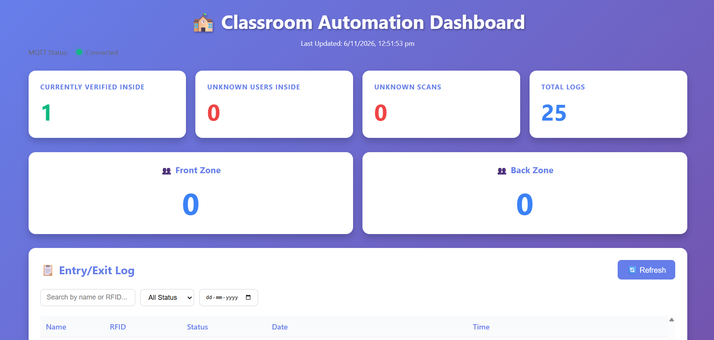

PROJECT 01
IoT / Edge AI
Smart Classroom Automation
Developed an IoT and Edge AI-based classroom automation system integrating RFID authentication, AI-powered presence detection, automated attendance tracking, and dual-zone lighting control. Implemented real-time communication using MQTT and a dashboard for classroom monitoring.